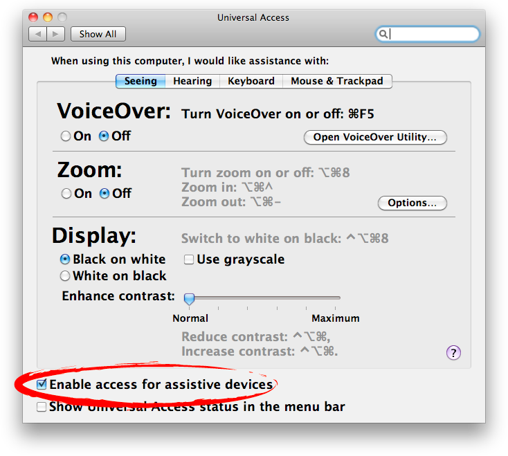

FrontAccess is an AppleScript module to obtain information for application process and its frontmost document using GUI Scripting. FrontAccess can help building a script which does not depend on a certain application.
The features of FrontAccess are..
Obtain the file reference of the frontmost document of the frontmost application process.
Save and close of the frontmost document of the frontmost application process.
Obtain information about the frontmost application process.
Enable GUI Scripting
FrontAccess requires GUI Scripting. Turn on the check box "Enable access for assistive device" in "Universal Access" in "System Preferences".

Sample
propertyFrontAccess : module
boot (module loader) forme
tell (makeFrontAccess) -- Making an instance of FrontAccess